Trang 1/15
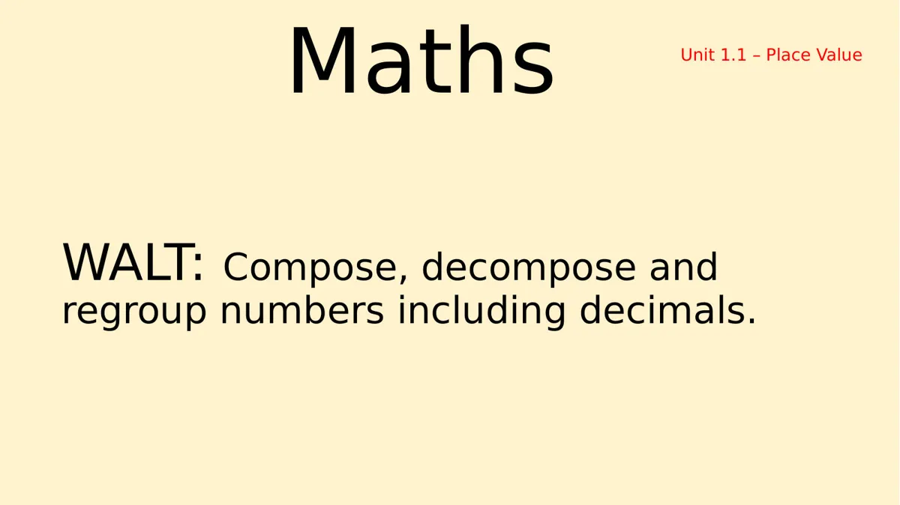
Maths WALT: Compose, decompose and regroup numbers including decimals.Unit 1.1 – Place Value
Trang 2/15
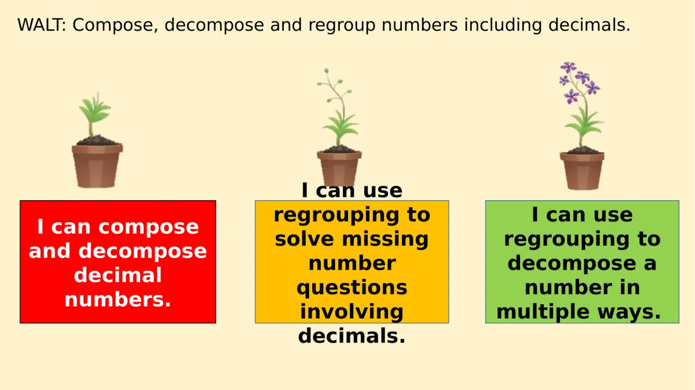
WALT: Compose, decompose and regroup numbers including decimals.I can compose and decompose decimal numbers.I can use regrouping to solve missing number questions involving decimals.I can use regrouping to decompose a number in multiple ways.
Trang 3/15
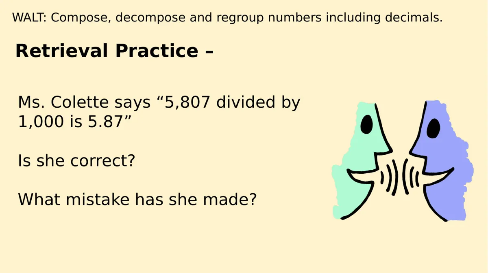
Retrieval Practice – WALT: Compose, decompose and regroup numbers including decimals.Ms. Colette says “5,807 divided by 1,000 is 5.87”Is she correct?What mistake has she made?
Trang 4/15
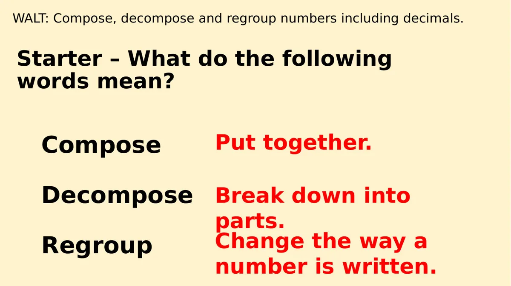
Starter – What do the following words mean? WALT: Compose, decompose and regroup numbers including decimals.ComposeDecomposeRegroupPut together.Break down into parts.Change the way a number is written.
Trang 5/15
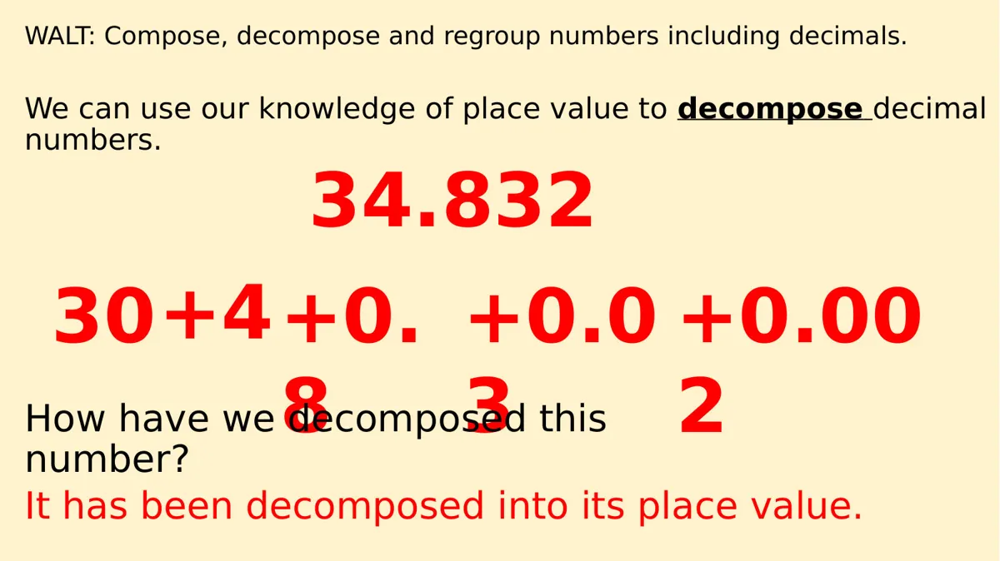
We can use our knowledge of place value to decompose decimal numbers.WALT: Compose, decompose and regroup numbers including decimals.34.83230+4+0.8+0.03+0.002How have we decomposed this number?It has been decomposed into its place value.
Trang 6/15
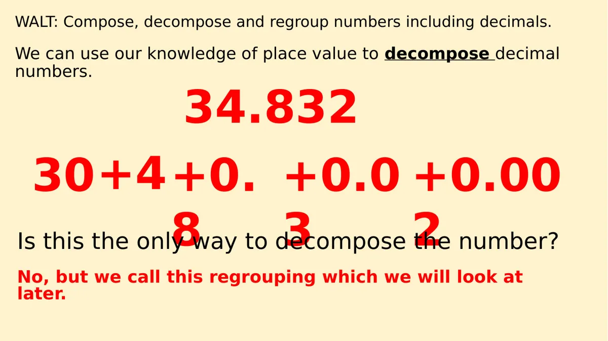
We can use our knowledge of place value to decompose decimal numbers.WALT: Compose, decompose and regroup numbers including decimals.34.83230+4+0.8+0.03+0.002Is this the only way to decompose the number?No, but we call this regrouping which we will look at later.
Trang 7/15
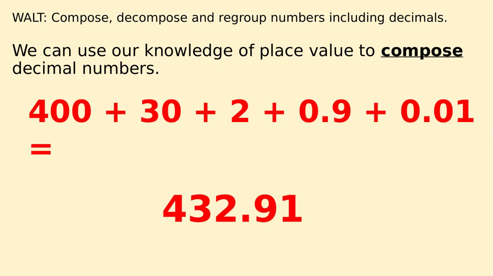
We can use our knowledge of place value to composedecimal numbers.WALT: Compose, decompose and regroup numbers including decimals.400 + 30 + 2 + 0.9 + 0.01 =432.91
Trang 8/15
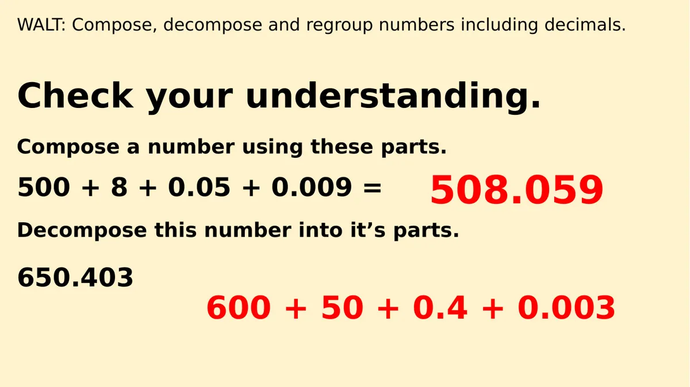
Check your understanding.WALT: Compose, decompose and regroup numbers including decimals.Compose a number using these parts.Decompose this number into it’s parts.500 + 8 + 0.05 + 0.009 =650.403508.059600 + 50 + 0.4 + 0.003
Trang 9/15
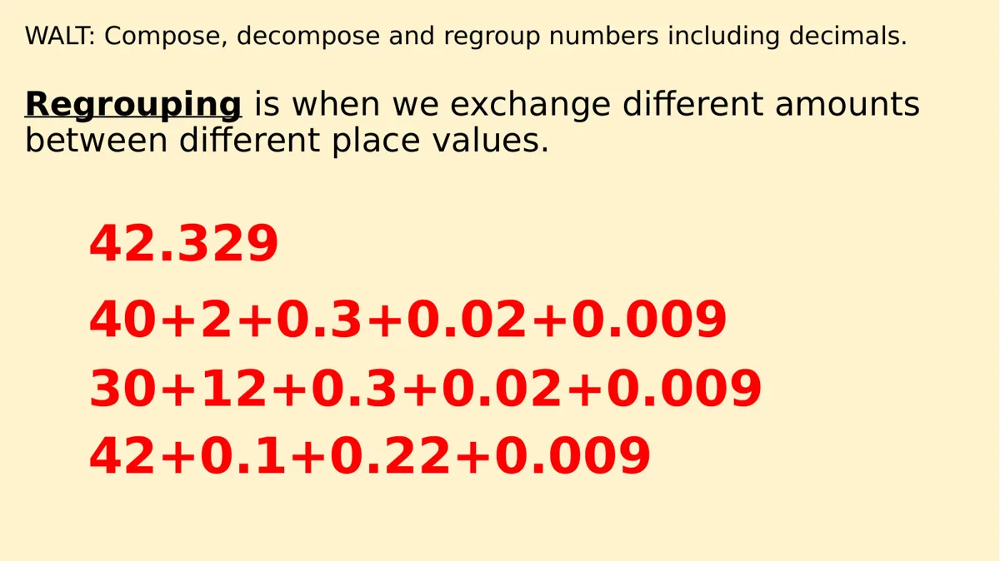
Regrouping is when we exchange different amounts between different place values.WALT: Compose, decompose and regroup numbers including decimals.42.32940+2+0.3+0.02+0.00930+12+0.3+0.02+0.00942+0.1+0.22+0.009
Trang 10/15
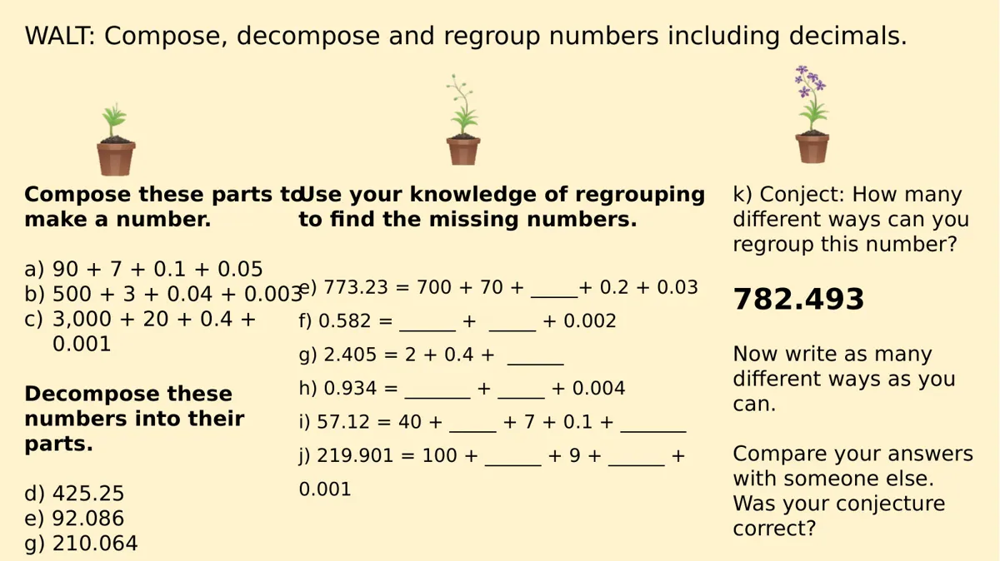
WALT: Compose, decompose and regroup numbers including decimals.Compose these parts to make a number.a)90 + 7 + 0.1 + 0.05b)500 + 3 + 0.04 + 0.003c)3,000 + 20 + 0.4 + 0.001Decompose these numbers into their parts.d) 425.25e) 92.086g) 210.064Use your knowledge of regrouping to find the missing numbers.e) 773.23 = 700 + 70 + _____+ 0.2 + 0.03f) 0.582 = ______ + _____ + 0.002g) 2.405 = 2 + 0.4 + ______ h) 0.934 = _______ + _____ + 0.004i) 57.12 = 40 + _____ + 7 + 0.1 + _______j) 219.901 = 100 + ______ + 9 + ______ + 0.001k) Conject: How many different ways can you regroup this number?782.493Now write as many different ways as you can.Compare your answers with someone else. Was your conjecture correct?
Trang 11/15
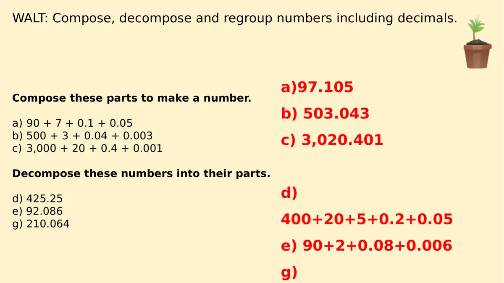
WALT: Compose, decompose and regroup numbers including decimals.Compose these parts to make a number.a)90 + 7 + 0.1 + 0.05b)500 + 3 + 0.04 + 0.003c)3,000 + 20 + 0.4 + 0.001Decompose these numbers into their parts.d) 425.25e) 92.086g) 210.064a)97.105b) 503.043c) 3,020.401d) 400+20+5+0.2+0.05e) 90+2+0.08+0.006g)
Trang 12/15
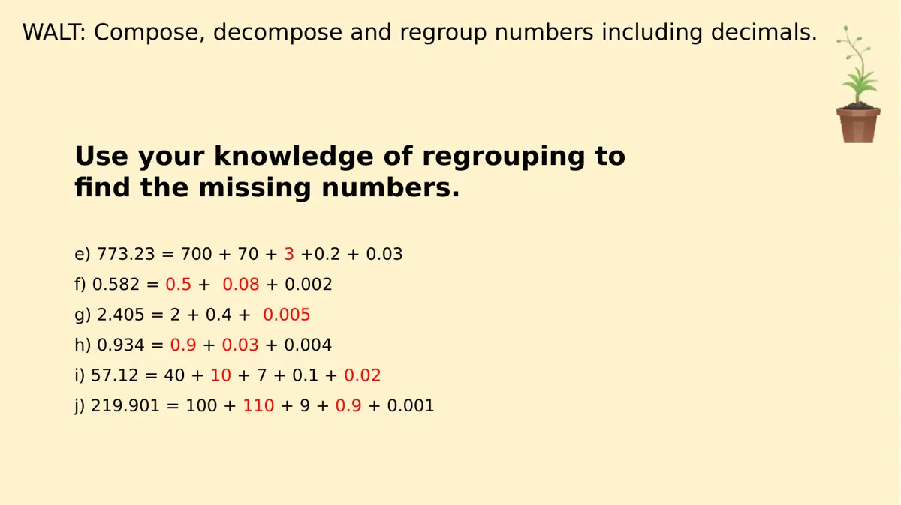
WALT: Compose, decompose and regroup numbers including decimals.Use your knowledge of regrouping to find the missing numbers.e) 773.23 = 700 + 70 + 3 +0.2 + 0.03f) 0.582 = 0.5 + 0.08 + 0.002g) 2.405 = 2 + 0.4 + 0.005h) 0.934 = 0.9 + 0.03 + 0.004i) 57.12 = 40 + 10 + 7 + 0.1 + 0.02j) 219.901 = 100 + 110 + 9 + 0.9 + 0.001
Trang 13/15
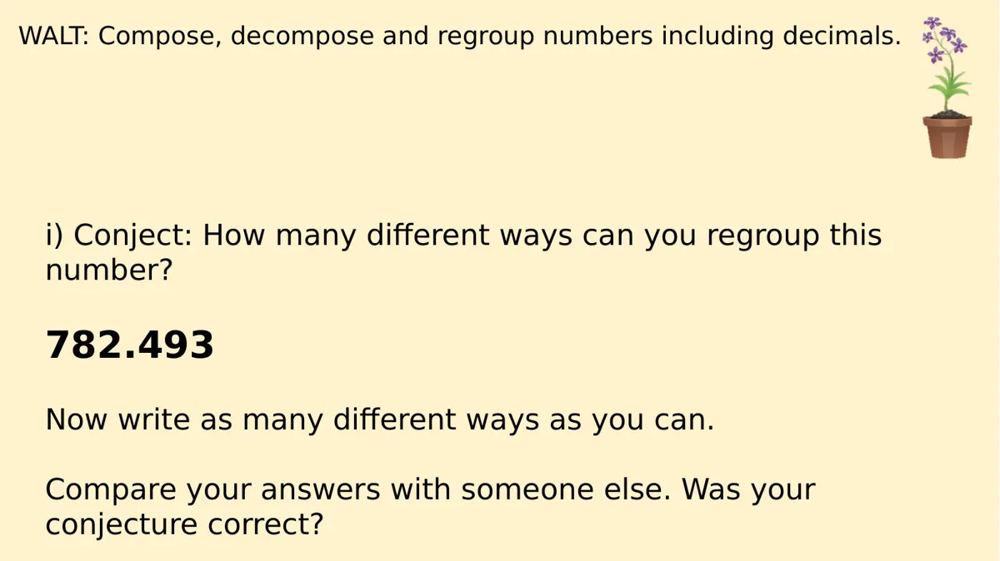
WALT: Compose, decompose and regroup numbers including decimals.i) Conject: How many different ways can you regroup this number?782.493Now write as many different ways as you can.Compare your answers with someone else. Was your conjecture correct?
Trang 14/15
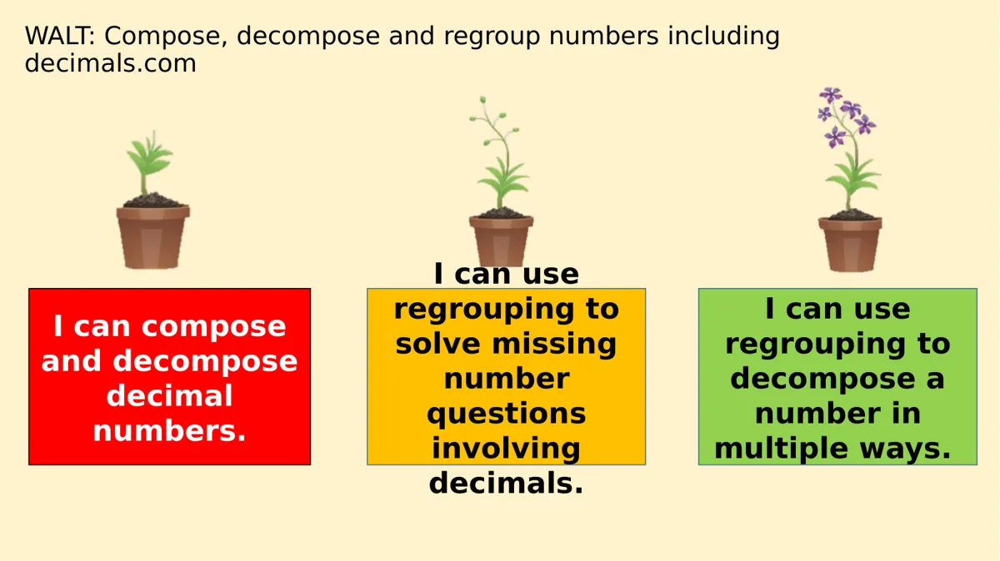
WALT: Compose, decompose and regroup numbers including decimals.comI can compose and decompose decimal numbers.I can use regrouping to solve missing number questions involving decimals.I can use regrouping to decompose a number in multiple ways.
Trang 15/15
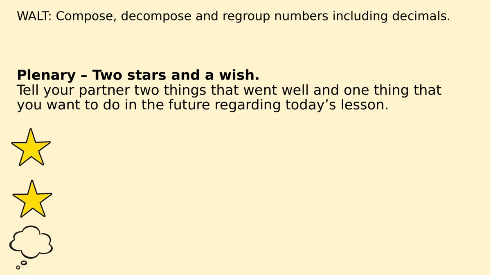
Plenary – Two stars and a wish.Tell your partner two things that went well and one thing that you want to do in the future regarding today’s lesson.WALT: Compose, decompose and regroup numbers including decimals.